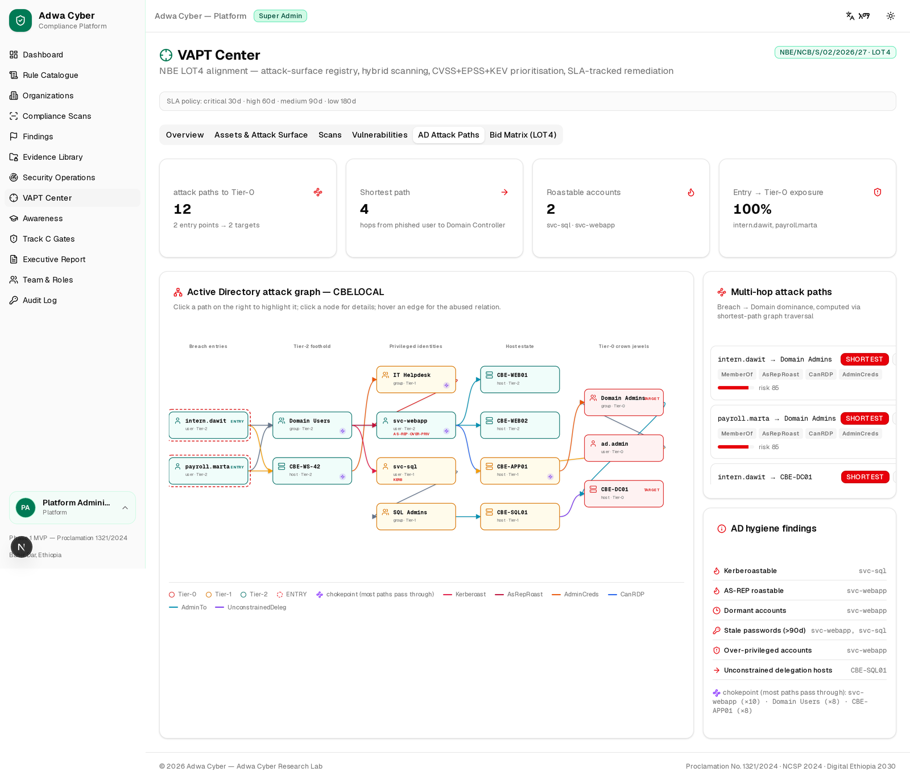

Captured from the running MVP — interactive tiered graph, technique-coloured edges.
12 attack paths computed from two phished users in the reference topology
Shortest path to Domain Admin: 4 hops
MemberOf → AsRepRoast → CanRDP → AdminCreds
Chokepoint detection: svc-webapp sits on 10 of 12 paths — fix one node, break ten paths
Answers NBE LOT4 tender §G (identity & lateral movement) — bilingual remediation guidance per edge